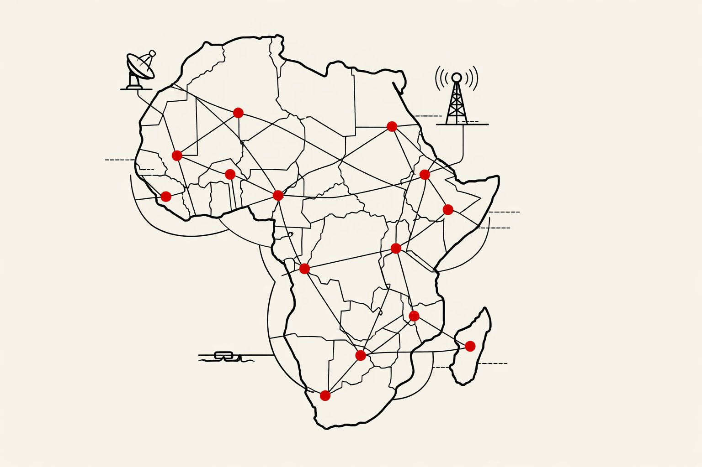
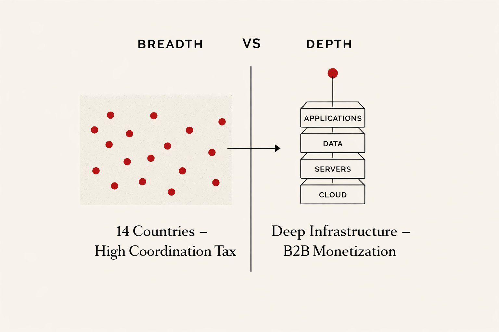
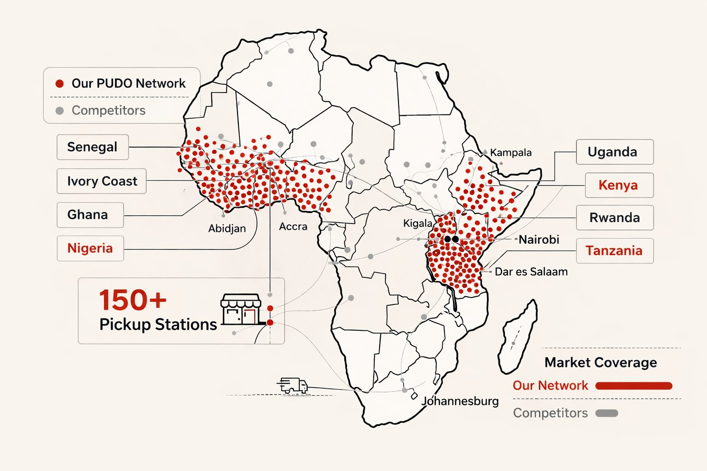
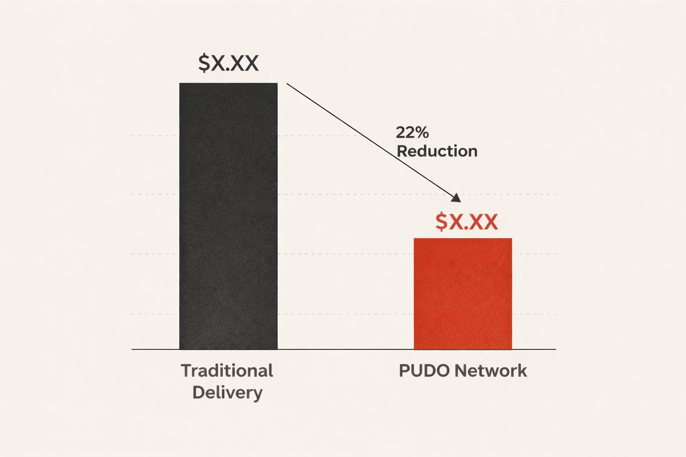
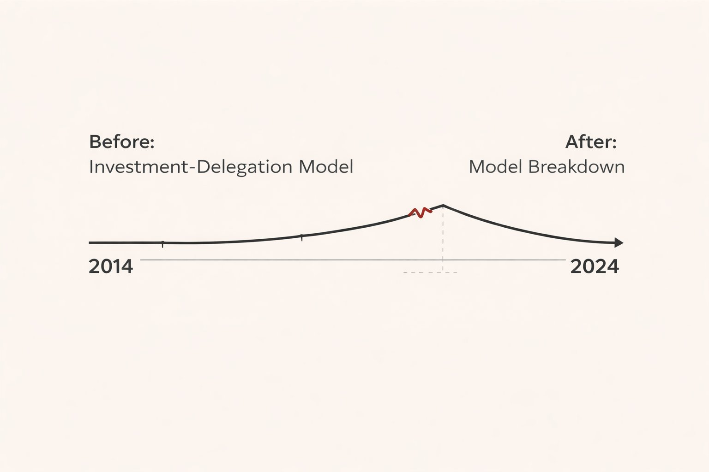
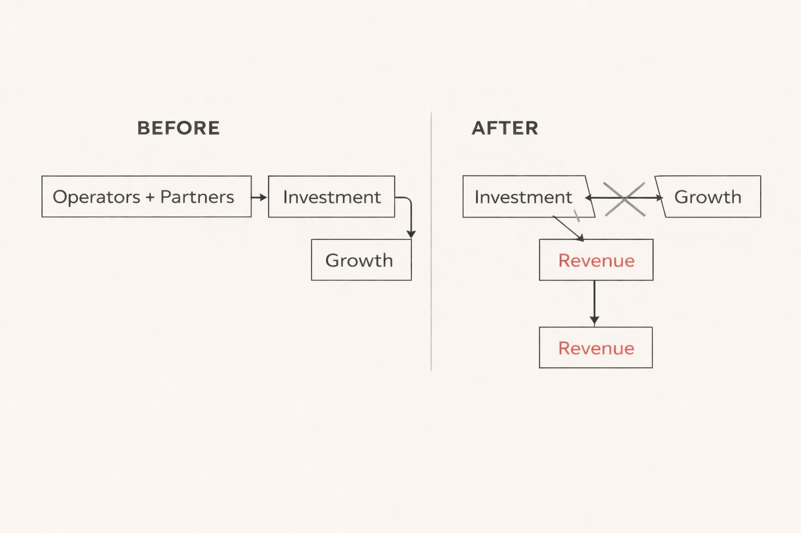

Telecom - Media - Platform Strategy - 18 Mar 2026
Why the Canal+/MultiChoice deal is not about content - it is about the structural obligation to serve a market that neither party fully understands yet.
Read Analysis →
AI - Platform Economics - 13 Mar 2026
Most AI-in-Africa coverage is about potential. This is about the three sectors where distribution moats are forming right now, and why the window is shorter than it looks.
Read Analysis →
Fintech - Infrastructure - 2 Mar 2026
The stablecoin debate in Western markets is a regulatory argument. In Africa it is a solved distribution problem. The gap between those two realities is where the opportunity lives.
Read Analysis →
Energy - Infrastructure - 26 Feb 2026
The MTN/IHS Towers deal is not a telecom story. It is an energy infrastructure arbitrage that most investors are still reading as a telco balance sheet move.
Read Analysis →
E-commerce - Distribution - 5 Mar 2026
The World Bank disburses billions through Africa every year. The companies that understand how to use that as a distribution moat are operating in a market with almost no competition.
Read Analysis →
Telecom - Platform Strategy - 23 Feb 2026
Airtel Africa is no longer chasing new countries. They are becoming an infrastructure company that happens to have a mobile network - and the unit economics tell you why.
Read Analysis →
E-commerce - Unit Economics - 9 Feb 2026
How Jumia's shrink-to-grow pivot and the rise of pickup stations are redrawing the map of African commerce - and what the unit economics actually look like now.
Read Analysis →
Telecom - Distribution - 13 Jan 2026
Why Value-Added Services were misunderstood for a decade, what broke the investment-delegation model, and what the distribution infrastructure question actually is in 2026.
Read Analysis →
Africa Market Entry - Due Diligence - Mar 2026
Six Africa market entry assumptions that kill otherwise sound deals. A growth operator's analysis of where distribution economics, regulatory timing, and demand validation actually break.
Read Analysis →
Telecom - Infrastructure - Platform Strategy - 23 February 2026
Beyond the Map: What Airtel's Pivot Tells Us About the New Rules of Growth
Airtel Africa is no longer chasing new countries. They're becoming an infrastructure company that happens to have a mobile network.

I've been watching the headlines about Airtel Africa's recent restructuring, and it feels like a full-circle moment. For years, the narrative in the "Real Economy" was about the land grab - adding countries, chasing subscriber counts, and showing a map covered in red. That is a platform economics story masquerading as a geography story.
But Airtel just flipped the script. They aren't chasing new flags anymore. They're becoming an infrastructure company that happens to have a mobile network. As a growth operator who has watched platform economics play out across African markets, this is the move I would have made three years ago.
The "Plumbing" is the Product
Most people see "Data Centers" or "Fiber Networks" as boring back-end costs. But as a Growth Operator, I see them as the ultimate platform economics play. By spinning off Nxtra and Telesonic, Airtel is moving from the volatile world of B2C prepaid users to the stable, high-margin world of B2B infrastructure - the same shift I analysed in the context of the investment-delegation model that defined VAS for a decade.

The Lesson for Scale-ups: Stop obsessing over your total user count if your "plumbing" is leaky. If you have built a tool to manage your logistics or data that is better than the product you are selling - that might be your real business. The unit economics of infrastructure are different from the unit economics of a subscriber base. Airtel is learning this lesson faster than most.
Leapfrogging isn't just for Startups
Airtel's partnership with Starlink is the ultimate Africa market entry hack. Instead of the grueling process of burying fiber in remote regions, they are renting the sky. It is a reminder that being an operator isn't about owning every part of the chain - it is about orchestrating the most efficient one. The distribution economics question in any Africa deal is not "how much infrastructure do you own" but "how indispensable is your position in the stack."
The Bottom Line
We are entering the era of unit economics validation. The coordination tax of managing 14 different regulatory environments is too high if you aren't monetising the core infrastructure. Airtel is choosing depth over breadth. In 2026, the winners in the African tech space won't be the ones with the biggest map, but the ones with the most indispensable pipes.
E-commerce - Africa - 9 February 2026
The Death of the "Amazon of Africa" Label
For a decade, Jumia was the poster child for burning cash in Africa. As we hit early 2026, the data tells a different story.

Between 2012 and 2022, the narrative was a cycle of high-level management in Dubai, massive marketing spends, and unsustainable last-mile logistics costs. But under CEO Francis Dufay, Jumia executed a shrink-to-grow strategy that many VCs once thought impossible for a pan-African giant. The same distribution economics pressure that broke the original model is now what makes the new model defensible.
The 2026 Performance Benchmarks. The results of this hard ops pivot are visible in Q3 2025 and Q1 2026 metrics: fulfillment expense per order has plummeted 22%, reaching approximately $1.86. Revenue surged 25% year-over-year despite a leaner footprint, driven primarily by the Nigerian market. These are the unit economics that matter - not gross merchandise value.

Why pickup is the new moat. Perhaps the most significant shift is Jumia's move away from expensive home delivery. By scaling its network of pickup stations to over 1,500 locations, Jumia solved two problems at once: slashed delivery costs and bridged the trust gap. In markets where home address systems are unreliable, the pickup station is not a compromise - it is the product. This is the same logic I traced in Airtel's infrastructure pivot: owning the indispensable point of contact is the moat.
Jumia isn't trying to be the "Amazon of Africa" anymore. They are becoming the logistics backbone of the continent. By opening their delivery network to third-party social commerce sellers through Jumia Delivery, they have turned their biggest cost center into a new revenue stream. That is platform economics in practice - not theory.
The end of vanity growth. The 2026 e-commerce landscape is defined by three hard ops realities: profitability over perimeter, the rise of agentic commerce, and logistics as a service. The real winners aren't the companies selling the most shirts - they are the companies moving the most parcels. To understand how this connects to Africa market entry more broadly, the Africa IC Checklist distribution economics dimension captures exactly why last-mile assumptions kill otherwise sound deals.
Telecom - Platform Strategy - 13 January 2026
VAS and Telcos: What We Got Wrong - And Why It Matters Now
A structural analysis of why Value-Added Services were misunderstood for a decade, what broke the investment-delegation model, and why the "premium content" answer misses the real question.

If you have ever worked in or around a telecom operator in Africa, you have probably heard some version of this sentence: "VAS are just extra services." That perception is widespread - and it is precisely why VAS have been so poorly understood for years. The misreading is not about the services themselves. It is about what distribution infrastructure actually means when traditional payment rails don't exist.
What VAS really were. Before app stores. Before widespread card payments. Before subscriptions became the default. VAS enabled telecom operators to monetise non-banked users, expand ARPU beyond connectivity, distribute digital products at massive scale, and turn trust and billing into a platform. In many emerging markets, VAS were the first large-scale digital economy people ever interacted with. They were not elegant. They were effective. The stablecoin distribution question in Africa is structurally the same problem: who controls the billing relationship controls the market.

The Investment-Delegation Model: Operators didn't build content; they delegated it to aggregators and studios. The operator provided the infrastructure (billing, distribution, trust), the aggregator managed content and customer experience. This worked because margins were high enough to split three ways: content creator, aggregator, operator. When data bundles collapsed the margin stack, the model had nowhere to go.
What broke it. The model worked until it didn't. Margin compression from data bundles, the rise of app stores as the default distribution layer, regulatory pressure on auto-renewals, and WhatsApp and YouTube replacing carrier portals all contributed to its decline. The operators who survived are the ones who understood that the moat was never the content - it was the billing infrastructure. The ones who confused the two are still trying to launch "premium content" plays in 2026.
The bottom line. VAS is not about premium content - it is about distribution infrastructure. The question isn't "what content should we offer" but "how do we become indispensable pipes for digital services in markets where traditional payment rails are weak?" That is the same question that Airtel is now answering at the infrastructure layer - and it is the question that matters in 2026. For investors assessing any Africa platform deal, the distribution economics dimension of the IC Checklist starts exactly here.